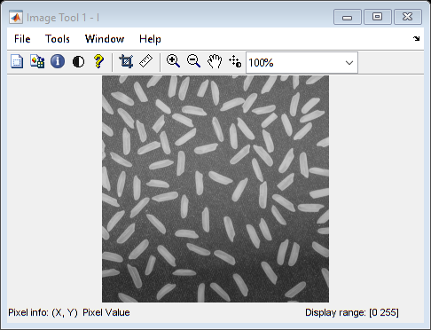

%%Charger une image dans la variable I I = imread('rice.png'); %%Afficher des informations m�moire concernant la variable I whos I %%afficher l'image avec imshow imshow(I) %%afficher l'image avec imtools imtool(I) %%afficher l'histogramme des niveaux d gris de l'image originale figure, imhist(I) %%Calculer l'histogramme �galis� et l'afficher I2 = histeq(I); figure, imshow(I2) %%afficher la nouvelle image dont l'histogramme a �t� �galis� figure, imhist(I2) %%Ecrire l'image dans un fichier externe imwrite(I2,'pout2.tif') %%Afficher les informations concernant l'image imfinfo('pout2.tif')
Name Size Bytes Class Attributes
I 256x256 65536 uint8
ans =
struct with fields:
Filename: 'C:\Users\pc\Desktop\master2\FINAL TIM FDD\...'
FileModDate: '06-May-2017 04:29:04'
FileSize: 65160
Format: 'tif'
FormatVersion: []
Width: 256
Height: 256
BitDepth: 8
ColorType: 'grayscale'
FormatSignature: [73 73 42 0]
ByteOrder: 'little-endian'
NewSubFileType: 0
BitsPerSample: 8
Compression: 'PackBits'
PhotometricInterpretation: 'BlackIsZero'
StripOffsets: [8 8196 16174 24342 32534 40612 48729 56729]
SamplesPerPixel: 1
RowsPerStrip: 32
StripByteCounts: [8188 7978 8168 8192 8078 8117 8000 8176]
XResolution: 72
YResolution: 72
ResolutionUnit: 'Inch'
Colormap: []
PlanarConfiguration: 'Chunky'
TileWidth: []
TileLength: []
TileOffsets: []
TileByteCounts: []
Orientation: 1
FillOrder: 1
GrayResponseUnit: 0.0100
MaxSampleValue: 255
MinSampleValue: 0
Thresholding: 1
Offset: 64906
